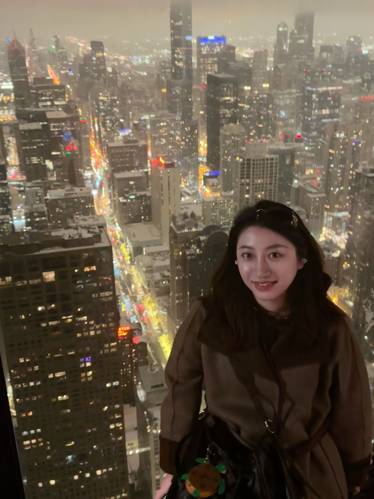
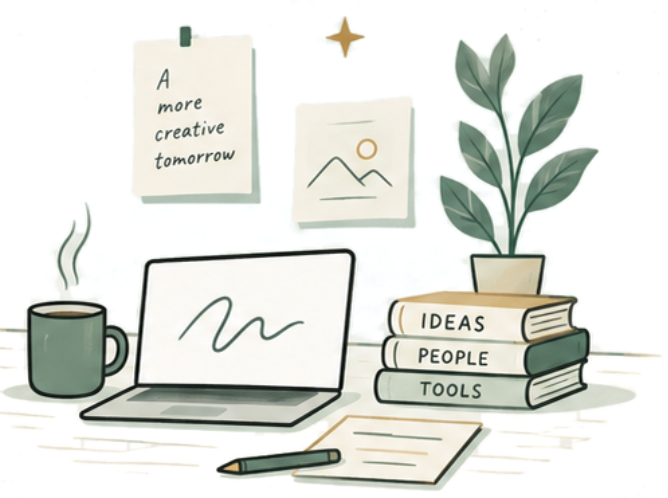

I'm interested in how interactive technologies can support creative work, including creativity support tools and human–AI co-creation. One area I explore is the intersection of creativity and visualization.
Advised by Dr. Naimul Hoque.
If you'd like to get in touch, you can reach me at tianwei-ma@uiowa.edu.

Developed StoryNavi, a system that uses vision-language models to find video clips relevant to a viewer's question and reassemble them into a coherent narrative. Ran user studies comparing video-centric and narrative-centric playback modes.
Designed a method that lets a chatbot invoke over 9,000 cloud APIs through natural language, reaching 85%+ accuracy, and filed a patent as first inventor. Improved the chatbot's persona consistency and knowledge retrieval with DPO training and RAG, and worked on model evaluation, multi-turn dialogue design, and tool-use integration. Also built time-series forecasting models for cloud resource pools, improving resource allocation efficiency by 96%.
Built sales forecasting models for Gucci, and customer behavior models (repurchase, churn, product preference, price sensitivity) for McDonald's to support targeted coupon distribution.
Performed text mining and visualization of application data, built a carbon emission prediction model, and explored integrating GPT-3 into application design.